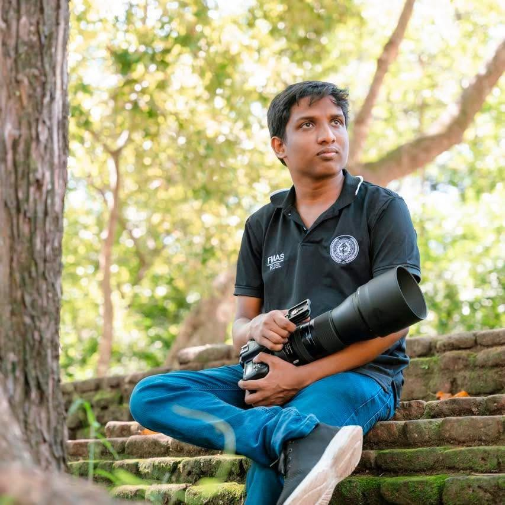
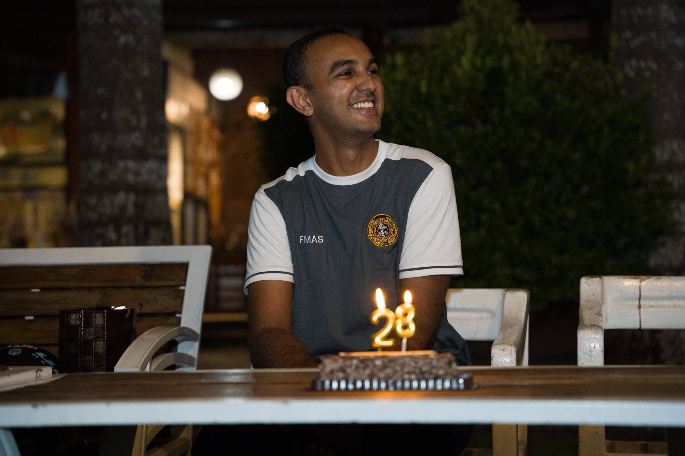

Amasha Lowe
Amasha Lowe is the author and compiler of this Psychiatry Casebook, prepared as part of Final MBBS clinical viva preparation. The case histories, mental state examinations, and management plans throughout this casebook were written and clinically structured by Amasha Lowe, drawing on real ward-based case presentations.
Purpose
This casebook was created to provide clear, exam-ready psychiatric case histories for Final MBBS viva preparation, structured consistently across History, Mental State Examination, Physical Examination & Differential Diagnosis, Summary & Problem List, Management, and Drug Side Effects.
Each case is supplemented with "Oxford Guidance" annotations, summarising the relevant section of the Shorter Oxford Textbook of Psychiatry (Cowen, Harrison & Burns), to connect the clinical case directly back to core textbook reasoning.
Cases in this casebook
- Schizophrenia (Paranoid type)
- Bipolar Affective Disorder — current episode of mania with psychotic symptoms
- Persistent Delusional Disorder — Jealousy type
- Alcohol Dependence with uncomplicated withdrawal
- Severe Depression without psychotic symptoms

Udana Anjana
Developer

Adithya Bandara
Developer
Developed with ❤️ by Udana Anjana & Adithya Bandara
© Amasha Lowe
© Amasha Lowe. All rights reserved.
The case histories, clinical content, and structure of this casebook are the intellectual property of Amasha Lowe. This material is made available for personal educational use in Final MBBS psychiatry viva preparation. No part of this casebook may be reproduced, redistributed, or published elsewhere, in whole or in part, without prior written permission from Amasha Lowe.
Patient names and identifying details in these case histories have been altered/anonymised for educational use.